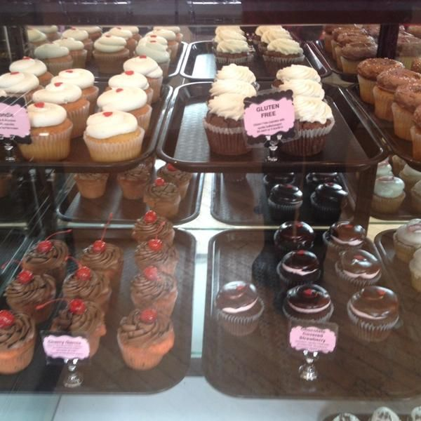

| Inicio | Nosotros | Productos | Eventos | Contacto |
| Pastelería Délice | |
|
Historia de nuestra tradición
Nuestra gloriosa y más que golosa andadura se
|
Tenemos productos sin gluten  |
|
Desde los inicios, esta casa ya marcaba maneras,
|
|
| Aviso legal / Política de cookies @Autor: Salvador Roda Alcayde 1ºDAW |